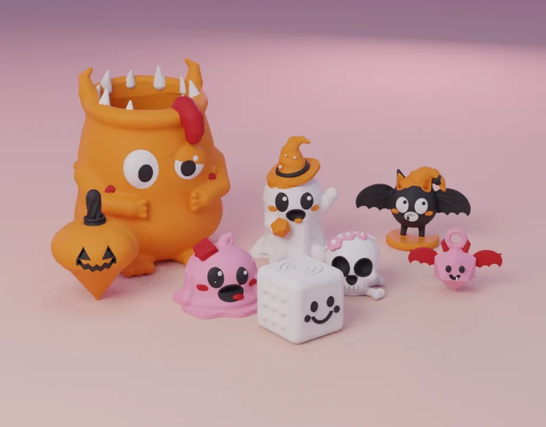

Você manda o .STL
Manda o .STL ou .3MF pelo WhatsApp e paga só a impressão: material, tempo de máquina e frete. Antes de imprimir, a gente confere o modelo e avisa se precisar de suporte.
Criaturinhas, brinquedos de mexer, decoração e peças de RPG. Tudo com desenho nosso, impresso uma peça por vez depois do pedido, nas cores do ateliê. Tem um arquivo seu? A gente imprime também.

Toca numa peça para ver as cores, as medidas e pedir pelo WhatsApp.
As peças de todos os lados, do jeito que saem da impressora.
Com o .STL pronto, você paga só a impressão. Sem arquivo, a gente modela para você. E qualquer peça da loja sai em branco para pintar ou em outra cor.
Manda o .STL ou .3MF pelo WhatsApp e paga só a impressão: material, tempo de máquina e frete. Antes de imprimir, a gente confere o modelo e avisa se precisar de suporte.
Manda a ideia, um desenho ou uma foto. Tem uma taxa de personalização e o 1º projeto inclui uma prévia 3D para você aprovar. Depois dele, cada mudança tem um valor adicional.
Qualquer peça sai em filamento branco, pronta para pintar, ou numa combinação de cores fora da loja, com uma pequena taxa de personalização.
PLA, um plástico rígido e leve. Só não deixa a peça no carro ao sol ou perto de fonte de calor: o PLA amolece acima de uns 55 °C.
Não precisa: as cores vêm do próprio filamento, cada parte impressa na sua cor. Se quiser pintar, a gente imprime em branco, com uma pequena taxa.
São imagens 3D dos modelos, com as cores de filamento que usamos. A peça impressa tem linhas finas de camada na superfície, normal na impressão 3D. Antes do envio você recebe uma foto da sua.
Depende do tamanho, do tempo de máquina e de quantas cores a peça tem. Manda o arquivo que a gente responde com o valor. Sem taxa de projeto quando o arquivo já vem pronto.
Sim: a serpente, o anel e o chapéu espiral saem da impressora já articulados. Na primeira vez, é só mexer com cuidado para soltar as partes.
Não. Tudo é desenho próprio, sem logos, símbolos ou personagens oficiais de jogo, série ou canal.